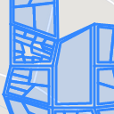
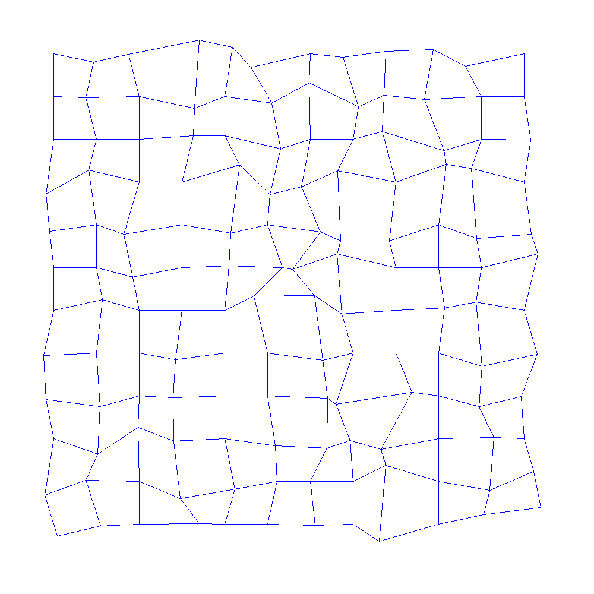
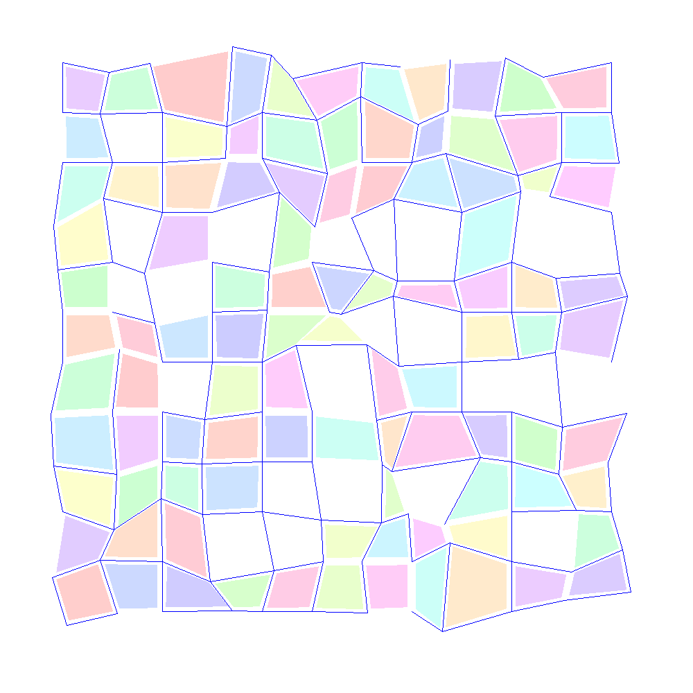
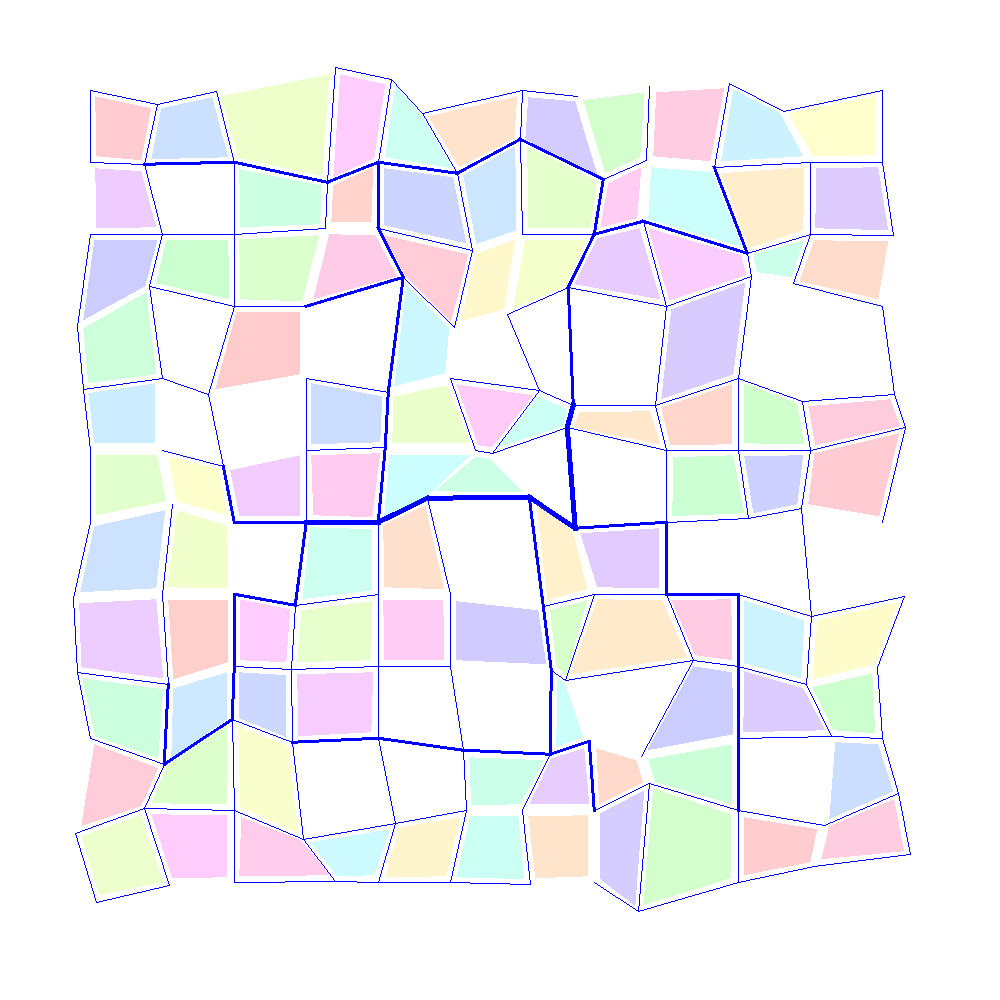
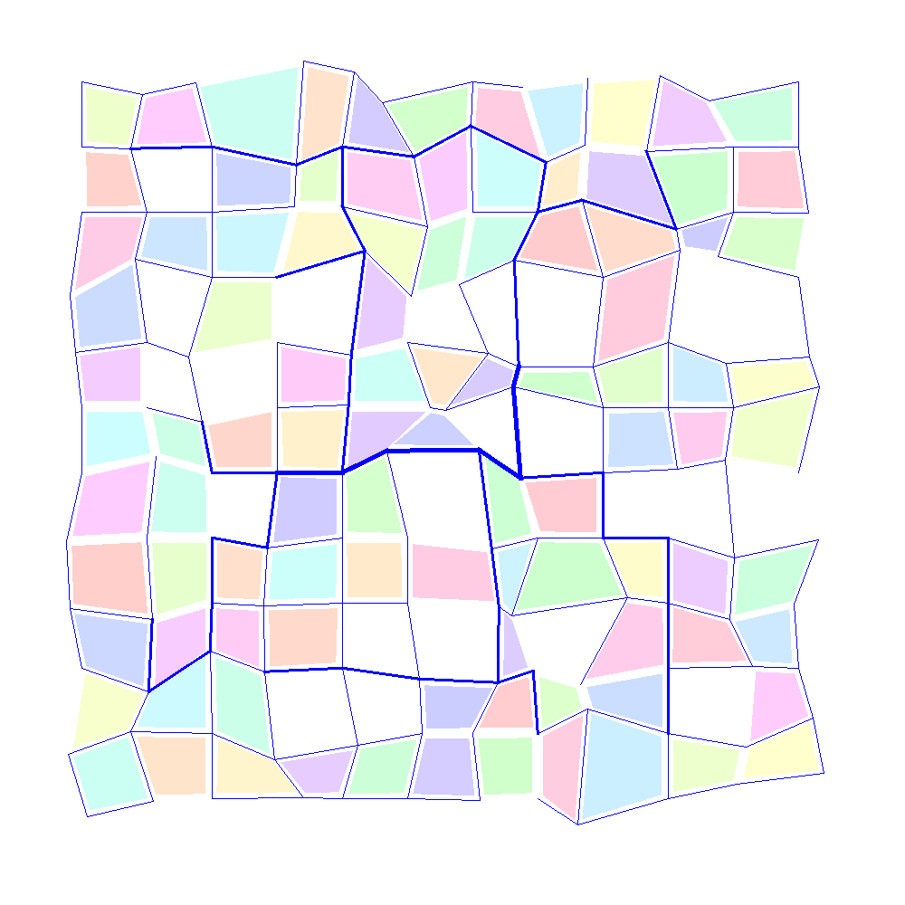
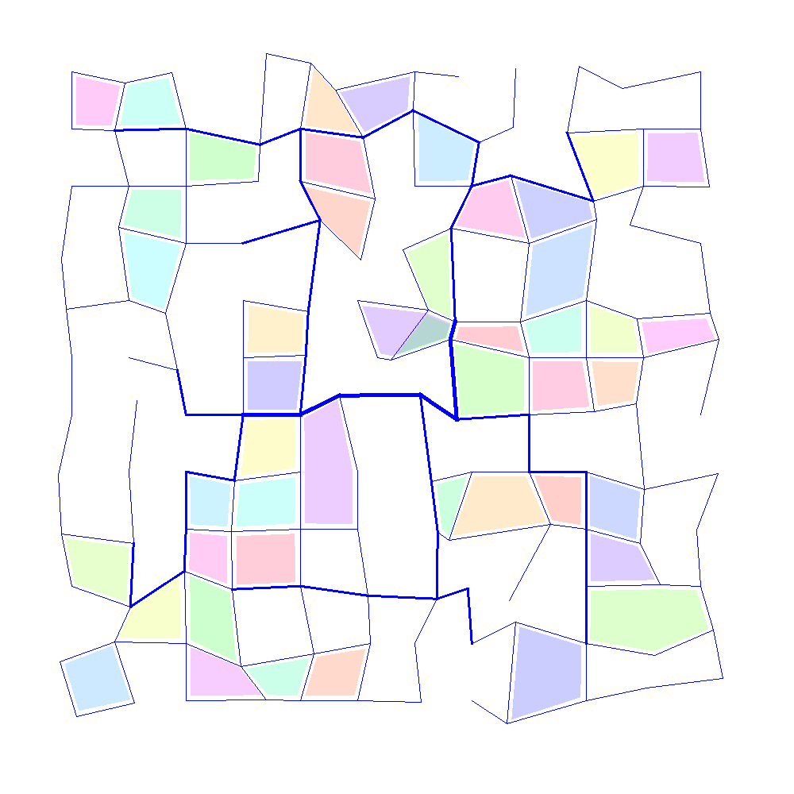
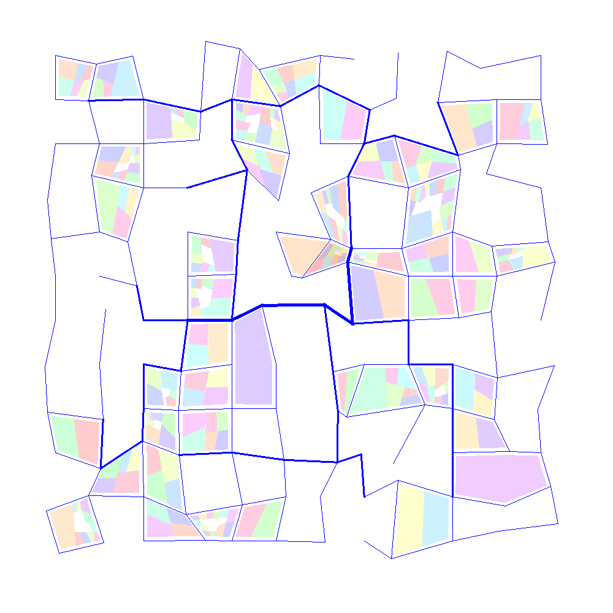
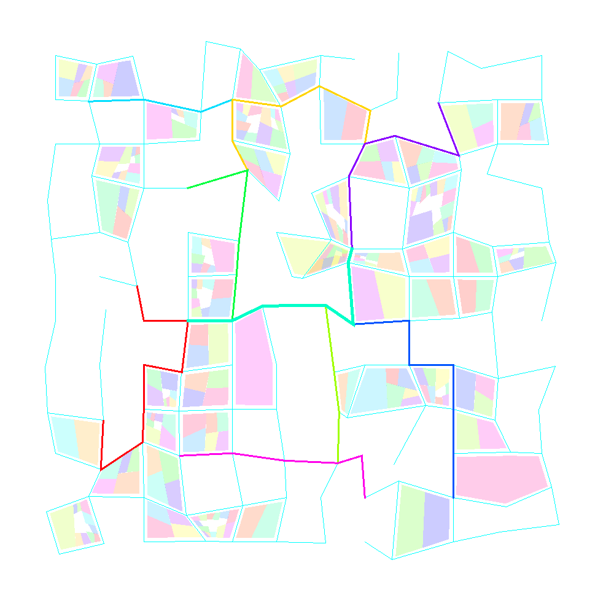
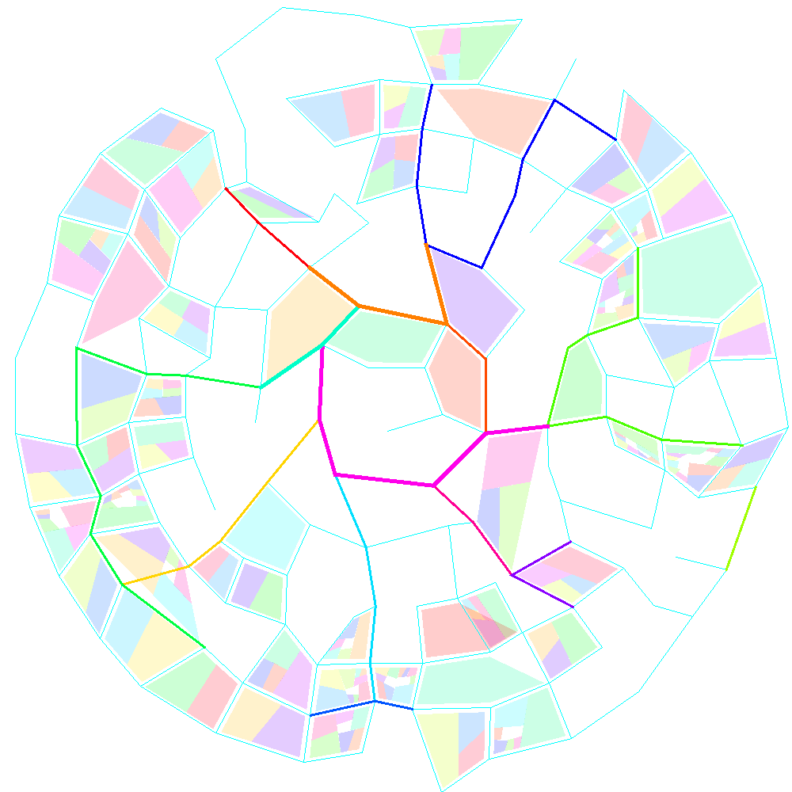
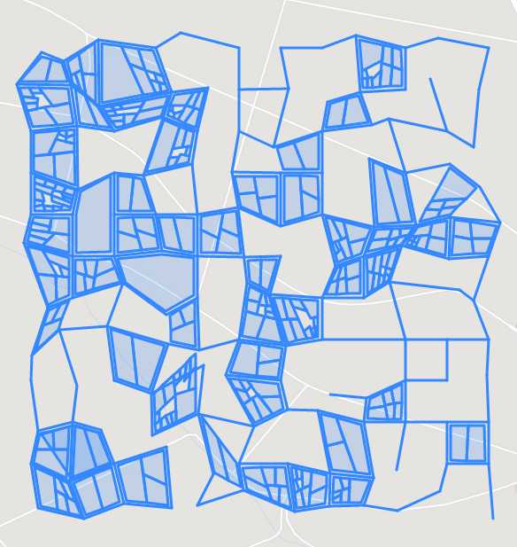

GeoJson Stadtplan-Generator

Ich habe mich wieder einmal mit dem Generieren von Testdaten beschäfigt - dieses Mal sollte es eine Karte eines urbanen Gebietes, sozusagen ein Stadtplan sein.
Ich habe die Inspiration dafür aus dem letzten Mindfuck-Vortrag und aus diversen im Internet verfügbaren Veröffentlichungen bezogen.
Die Arbeiten, die ich dazu gefunden habe, würden heute ghern kolportierten Qualitätsansprüchen an wissenschaftliche Arbeiten nicht genügen: Die Informationen darin waren lückenhaft und nicht ausreichend, um die dargestellten Ergebnisse nachvollziehen zu können.
Ich musste also selbst kreativ werden. Auch ich werde hier das Verfahren nicht so detailliert darstellen, dass andere es nachprogrammieren könnten - allerdings habe ich auch kein Problem damit, den Quelltext bei Bedarf herauszugeben - vielleicht wird auch irgendwann ein Github-Repository oder wenigstens ein Gist daraus. Aktuell ist der Generator noch Work-in-Progress.
Ausgangspunkt der Generierung ist die Erzeugung eines Gitters - aktuell wird ein rechteckiges (quadratisches) und ein kreisförmiges (Wheel-and-spokes) Gitter unterstützt. Die Verbindungen der Knoten im Gitter stellen die Grundlage für die späteren Straßen im stasdtplan dar:
Ausgangspunkt: Gitter
Anschließend werden die Gitterpunkte zufällig verschoben um dem ganzen einen "organischen" oder "gewachsenen" Eindruck zu geben:

Gitterpunkte wurde zufällig verschobenAnschließend werden einige Straßen enmtfernt, wobei jedoch immer darauf geachtet wird, dass das Straßennetz als Ganzes nicht in Teile zerfällt und jeder Knoten im Graphenm nach wie vor von jedem anderen aus erreichbar ist.
Daraufhin werden die Polygone im Gitter identifiziert und in einer internen Datenstruktur für die spätere Verwendung gespeichert. Die Polygone entsprechen den Häuserblocks im späteren Stadtplan:

Polygone werden identifiziert und einige der Straßen werden entferntNunmehr werden die Straßen in drei Kategorien unterteilt: Nebenstraßen, Hauptstraßen und Magistralen. Dies geschieht mittels eines Verfahrens, das ich direkt einer der angegebenen Arbeiten entnommen habe. Die Wichtigkeit der Straßen wird durch die Dicke der Linien in der Visualisierung dargestellt:

Straßen werden in drei Klassen unterteiltDiese Arbeit "begradigt" später die besonders wichtigen Straßen noch ein wenig - ein Arbeitsschritt, der in meiner Implementierung zwar vorgesehen, jedoch noch nicht implementiert wurde:

Begradigung bedeutsamer Straßen - noch nicht implementiertAn dieser Stelle würden mehrere Polygone, die nun nicht mehr durch Straßen getrennt sind, zusammengefasst. Dadurch würden unter Umständen konkave Polygone entstehen. Deren Behandlung - beispielsweise durch Triangulation ist noch nicht implementiert, so dass solche Polygone entfernt werden. Dieser Schritt ist optional - wird er ausgeführt, sieht das Ergebnis beispielsweise so aus:

optional: Entfernen weiterer PolygoneAnschließend werden die Polygone partitioniert, was dem "Errichten" von Gebäuden auf den einzelnen Häuserblocks entspricht:

Partitionieren der Polygone - Errichten von GebäudenDaran schließt sich der vorerst letzte Schritt der Generierung an: die Straßen höherer Ordnung (Hauptstraßen und Magistralen) werden zu Straßenzügen zusammengefasst - in der Visualisierung erkennt man das an der gleichen Färbung von Straßenabschnitten:

Zusammenfassung von Straßenabschnitten wichtiger StraßenHier noch kurz ein Beispiel für das Ergebnis des beschriebenen Vorgehens wenn ein rundes Gitter als Ausgangspunkt gewählt wurde:

Ergebnis der Generierung mit einem runden Gitter als AusgangspunktDas Ergebnis des Gererierungsprozesses kann anschließend als GeoJson exportiert und in diverse online verfügbare Werkzeuge zur Bearbeitung von Geodaten (Beispiele) importiert werden:

Visualisierung eines entstandenen GeoJson-DatensatzesArtikel, die hierher verlinken
Beliebige äußere Form für generierte Stadtpläne
25.07.2021
Ich habe den neulich vorgestellten Generator für beliebige Stadtpläne, der als Ausgabeformat unter anderem GeoJson unterstützt ein wenig erweitert
Generator für LDIF Dateien zum Test von Verzeichnisdiensten
15.07.2021
Ich hatte hier in letzter Zeit verschiedentlich auf einen Docker-Container hingewiesen, der es erlaubt, schnell einfache LDAP-Tests durchzuführen. Ich habe das Repository inzwischen geforkt und einige weitere Beispieldatensätze aus dem Internet eingefügt - das reichte mir aber noch nicht...


Vor 5 Jahren hier im Blog
-
LXC Netzwerk Degrader
06.10.2019
Ich habe neulich ein Skript zur automatisierten Erstellung eines Routers in einem LXC-Container präsentiert - ein wenig wie Docker nur ohne Docker.
Weiterlesen...
Tags
Android Basteln C und C++ Chaos Datenbanken Docker dWb+ ESP Wifi Garten Geo Git(lab|hub) Go GUI Gui Hardware Java Jupyter Komponenten Links Linux Markdown Markup Music Numerik PKI-X.509-CA Python QBrowser Rants Raspi Revisited Security Software-Test sQLshell TeleGrafana Verschiedenes Video Virtualisierung Windows Upcoming...
Neueste Artikel
- Carl Sagan - Christmas Lectures at the Royal Institution
Die Royal Institution hat in ihren Schätzen gegraben und die Christmas Lectures von Carl Sagan auf Youtube nochmals veröffentlicht. Meiner Ansicht nach unbedingt lohnenswert für alle, die Englisch verstehen!
Weiterlesen... - Turing complete LLMs
Ich beschäftige mich mit Cybersecurity auch beruflich - während mein Fokus privat und als Hobby hier eher auf crypto und im Speziellen auf PKI liegt interessiere ich mich beruflich für secure Softwareentwicklung und Minimierung von Angriffsoberflächen.
Weiterlesen... - sQLshell endlich wieder per WebStart verfügbar!
Die sQLshell ist nunmehr wieder in drei Deploymentvarianten verfügbar: Dem Standardinstaller für Linux und Windows, der portablen Version zum Start von - zum Beispiel - einem USB-Stick und endlich wieder als WebStart-Variante
Weiterlesen...
Manche nennen es Blog, manche Web-Seite - ich schreibe hier hin und wieder über meine Erlebnisse, Rückschläge und Erleuchtungen bei meinen Hobbies.
Wer daran teilhaben und eventuell sogar davon profitieren möchte, muß damit leben, daß ich hin und wieder kleine Ausflüge in Bereiche mache, die nichts mit IT, Administration oder Softwareentwicklung zu tun haben.
Ich wünsche allen Lesern viel Spaß und hin und wieder einen kleinen AHA!-Effekt...
PS: Meine öffentlichen GitHub-Repositories findet man hier - meine öffentlichen GitLab-Repositories finden sich dagegen hier.